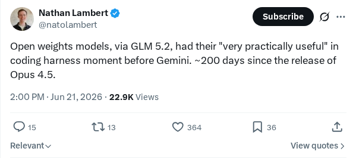
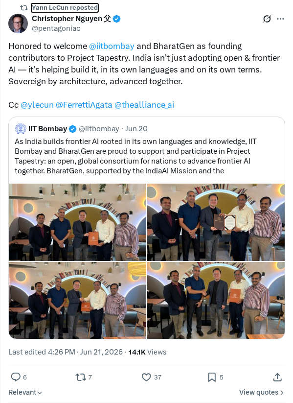
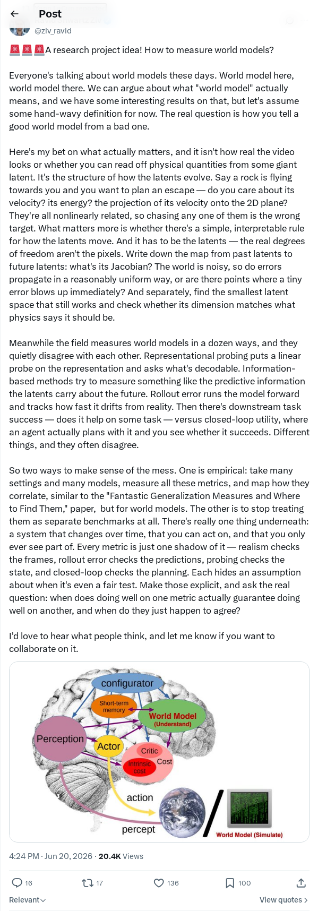
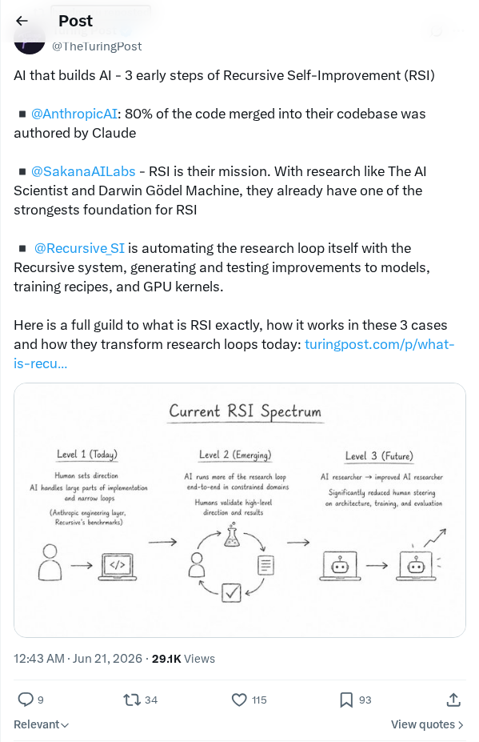

Claude 上的身份验证
Anthropic 已对 Claude AI 用户实施强制身份验证流程，以增强平台安全性并遏制自动化滥用。此更新的安全协议要求用户进行账户验证，这引发了关于隐私、数据留存和用户可访问性的讨论。此次推广代表了行业的一个大趋势：各大知名人工智能实验室正推行更严格的 KYC 式身份核查，以确保其模型生态系统的安全并防止未经授权的 API 滥用。
AI 前沿资讯、研究与趋势精选
Anthropic 已对 Claude AI 用户实施强制身份验证流程，以增强平台安全性并遏制自动化滥用。此更新的安全协议要求用户进行账户验证，这引发了关于隐私、数据留存和用户可访问性的讨论。此次推广代表了行业的一个大趋势：各大知名人工智能实验室正推行更严格的 KYC 式身份核查，以确保其模型生态系统的安全并防止未经授权的 API 滥用。
软件工程师 Martin Fowler 的平台发布了一份指南，概述了利用大语言模型构建可靠智能体 AI 系统所需的工程实践和架构模式。该指南针对 LLM 的非确定性特征，强调了包括结构化输出、确定性护栏和严格提示词工程在内的核心缓解策略。它详细介绍了诸如智能体-工具循环（Agent-Tool-Loop）、可观测性集成和持续评估数据集等关键设计模式。这些工程实践旨在将实验性的自主智能体转变为可预测的企业级生产软件。
《哈佛商业评论》分析了生成式人工智能如何导致早期招聘渠道的两端同时崩溃。求职者利用生成式 AI 工具大规模生成定制简历，而招聘人员则通过自动化筛选机器人和 AI 评估流水线来应对这种海量申请。这种对抗性的自动化循环导致标准的简历解析失效，并掩盖了真正的天才。分析建议各组织转向互动式的真实技能评估和经过验证的作品集，以绕过算法产生的噪音。
安全研究员 Michal Zalewski 探讨了深度神经网络快速扩展的理论局限性和对齐挑战。文章强调了经验工程成就与缺乏解释模型泛化能力的综合理论框架之间的紧张关系。它分析了将黑盒神经网络集成到关键基础设施中的安全风险，提倡开展严谨的可解释性研究，并建立更强有力的治理模型，以监控和管理大规模机器学习系统不可预测的涌现行为。
软件测试专家 James Bach 提出了一个伦理论点，反对利用生成式 AI 撰写内容并将其作为原创人类作品呈现。该文概述了将 AI 生成内容声称是个人原创的风险，指出这会降低个人信誉、稀释真实沟通并减缓批判性思维的发展。Bach 认为，保持知识完整性需要在何时使用生成式工具的问题上设定明确界限，并对创意或技术写作中 AI 的辅助作用进行透明披露。
Runway 正式发布了 Act-One，这是一个旨在利用生成式 AI 生成极具表现力的高保真角色动画的新系统。该工具允许动画师和创作者将微表情、身体动作和表演细微差别直接从单个视频源高精度地映射到各种数字角色模型上。通过处理面部表情并将其转换为风格化或逼真的模型，Act-One 避免了对昂贵的动作捕捉设备和复杂手动关键帧设置的传统依赖。此发布将以表演驱动的工作流直接引入现代视频创作流水线。

开源权重模型 GLM 5.2 在自动化编码任务中展示了显著进展，在标准代码评估工具集中表现强劲。此版本标志着开源权重架构的重要进步，足以媲美 Gemini 后续迭代前的商业同类产品。该模型的发展路径突显了开源生态系统如何缩小与闭源专有系统之间的性能差距。GLM 模型家族的集成也得到了 Fireworks AI 等平台的支持，从而可以在 Claude Code 等开发环境中实现快速部署。

印度理工学院孟买分校（IIT Bombay）和 BharatGen 计划已正式加入 Project Tapestry，成为推动开源 AI 基础设施建设的创始贡献者。该合作专注于构建大规模模型架构，并建立基于印度区域语言多样性和文化知识的代表性语言特定 AI 系统。通过汇集本地化数据集和学术计算研究，该伙伴关系旨在开发具有包容性的全球 AI 系统，同时加速技术自给自足。此次集成标志着国际开源开发的一个重要里程碑。

AI 研究人员目前正在讨论用于衡量世界模型能力的新方法和评估框架。其主要目标是建立稳健的基准，以量化智能体系统中的环境理解能力和预测准确性。通过确定模型如何模拟和映射空间及功能现实的标准化指标，社区希望引导开发工作向模拟和物理环境中的可靠、可解释和复杂推理方向迈进。制定这些基准仍然是评估通用智能体行为的核心课题。

AI 研究正进入递归自我改进（RSI）的早期阶段，这一点在软件生产中表现尤为明显，即系统能够生成并优化自身代码。来自 Anthropic 的最新见解显示，他们合并的代码库中约有 80% 是由 AI 模型辅助或生成的。这种转变预示着向自动化循环的发展，模型通过修改代码来增强架构和性能，这可能会加速机器学习的开发周期并改变软件工程的工作流。